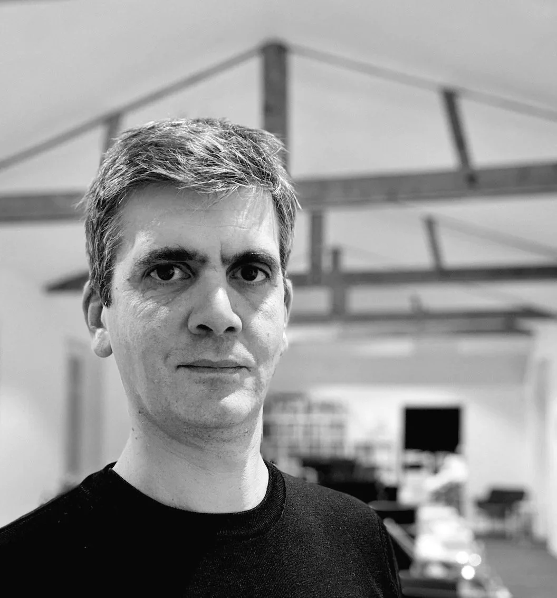
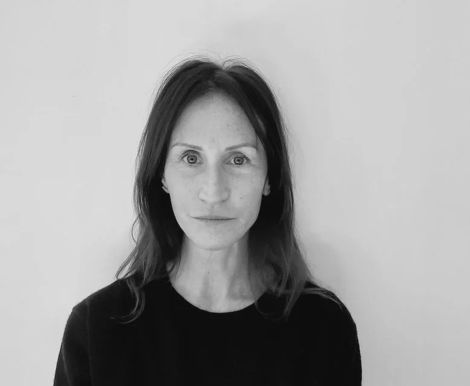
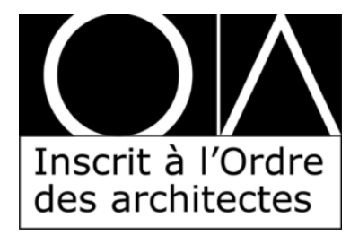
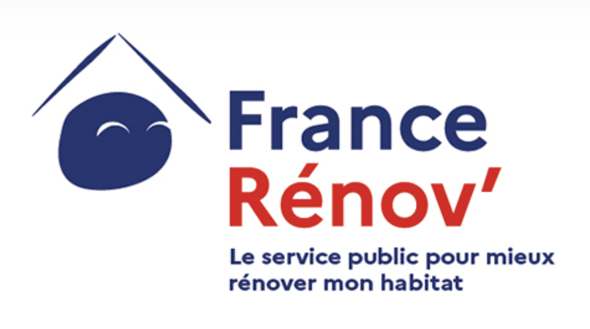

Vincent LamarcheArchitecte D.P.L.G. · gérant

VJL est une équipe pluridisciplinaire au service de la conception, de la rénovation et de l’amélioration énergétique, conjuguant qualité architecturale et problématiques économiques, techniques et environnementales.
Le cabinet propose une offre globale grâce à la mise en place de partenariats avec des bureaux d’études et des acteurs du financement.
Les rôles et noms ci-dessous reprennent l’équipe présentée par VJL.


L’agence indique être référencée et certifiée France Rénov’ (architecte RGE) et présente également son inscription à l’Ordre des architectes et CoachCopro.


La liste de références affichée par l'agence réunit notamment :